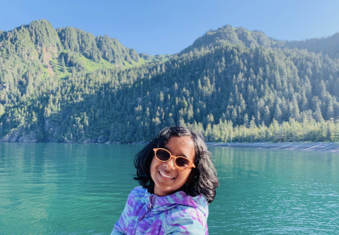
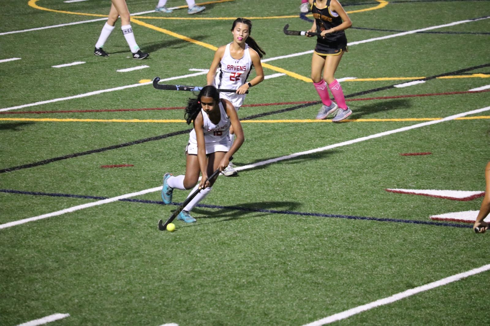

I’ve done many hobbies in my past that I’ve enjoyed, like dance, piano, traveling, and field hockey. A year ago, I completed my Arangetram, which is a three-hour show of eleven different songs that demonstrated a completion of my senior dance skills, which took over 12 years to learn. I have completed my piano exams and occasionally play piano for fun by learning modern, pop songs. I’ve always loved to travel and have visited over 50% of all National Parks, which has shown me a glimpse of other lifestyles. This year, I’ve made it onto the CCA Varsity field hockey team and love practicing everyday with my teammates. All of these achievements wouldn’t have been possible without my childhood curiosity and passion, which I hope will stay with me throughout my life.
Currently, I’m 16 years old and a sophomore at Canyon Crest Academy. I’m taking engineering and computer science courses and want to major in an area of STEM. My hobbies include reading, playing field hockey, and hanging out with my friends during the weekends. I’ve lived in San Diego with my sister, my dog, my parents, and my grandpa for most of my life and love spending time with them whenever I can. I enjoy being surrounded by my like-minded peers that share an aim at doing good in the world through tiny steps, whether it be a big impact or small one.
Looking in the future, I aspire to be someone who takes initiative and is a leader. I want to preferably have a job that makes a lot of money while also doing something that I love. I also want to be able to travel a lot and see the world (while also visiting the remaining 50% of National Parks). In these travels, I hope to learn a lot about other cultures and customs in order to discover new concepts about different people and personalities. One goal I have for myself in the future is to decide specifically what I want to do in my life and achieve it. My other goals include going to a respectable college in three years, learning how to do important life skills, and enjoying life to the fullest.